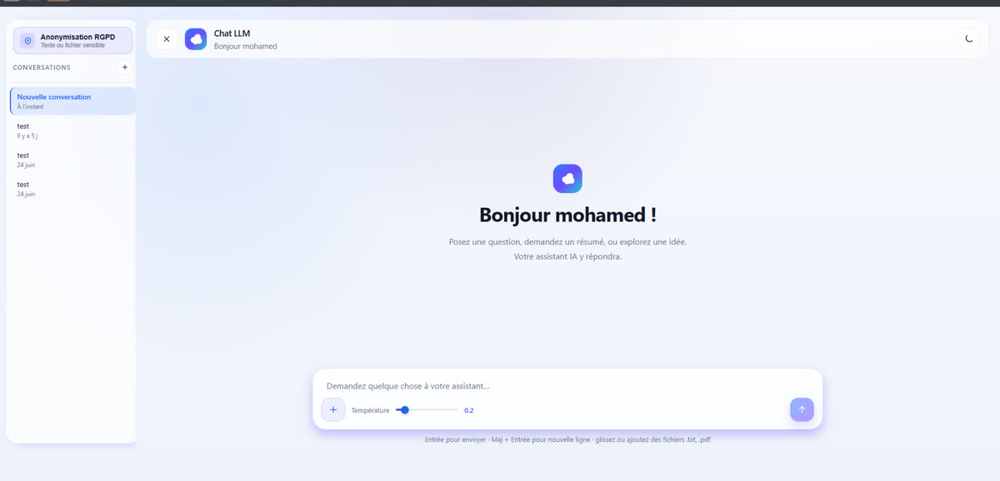
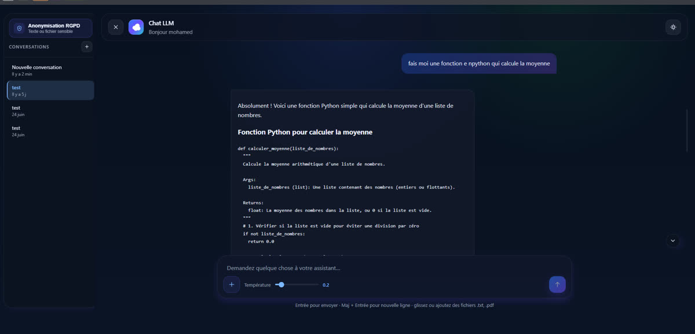

Professionnel · IA générative
Déployer un LLM interne
à la DSI de La Poste
Trois mois au sein de la DSI de La Poste (BSCC), pour explorer une question simple en apparence : comment une grande entreprise peut-elle utiliser l'IA générative sans envoyer ses données à des fournisseurs externes ?
Le problème
Les outils d'IA grand public (ChatGPT, Copilot) posent un problème de souveraineté des données pour une entreprise comme La Poste, et leur coût à l'échelle devient vite significatif.
L'enjeu du stage était donc de construire une alternative interne, maîtrisée de bout en bout.
Ce que j'ai construit
J'ai déployé Gemma 4 E2B en interne via vLLM, sur deux VMs GPU en haute disponibilité, exposé sous une API compatible OpenAI. Autour de ce modèle, j'ai développé une interface web type Copilot permettant aux équipes non techniques de l'utiliser au quotidien.
Pour étendre l'usage du modèle au-delà de l'interface web, j'ai également développé un custom node n8n en TypeScript, publié sur le registre npm interne, permettant de brancher le LLM directement dans des workflows d'automatisation.
Modèle & haute disponibilité
Gemma 4 E2B servi par vLLM sur deux VMs NVIDIA L40S (24 Go de VRAM chacune), derrière une VIP HTTPS Keepalived qui répartit les requêtes et bascule automatiquement en cas de panne d'une VM.
Interface type Copilot
Backend FastAPI (streaming SSE token par token, extraction PDF/TXT) et frontend d'abord prototypé en Lit, puis porté sous Angular pour tenir dans la durée. Réglage de la température, mode sombre/clair.
Anonymisation RGPD
Le modèle extrait les données sensibles d'un texte sous forme de JSON structuré ; le code résout les chevauchements et remplace chaque occurrence par un alias typé déterministe ([nom_01], [email_02]…), avec la table de correspondance en retour.
Custom node n8n & IDE
Node TypeScript @bscc/n8n-nodes-llm-interne (opérations Chat et Anonymiser), publié en interne. Intégration Cline dans VS Code et IntelliJ IDEA pour les développeurs de l'équipe.
De llama.cpp à vLLM : diagnostiquer un goulot d'étranglement
Le projet a évolué en trois phases. J'ai d'abord validé le modèle en local, puis déployé llama.cpp sur une VM GPU. En mise en charge, le problème est apparu : llama.cpp traite les requêtes une par une, sans file d'attente interne. Dès que plusieurs appels arrivaient en même temps (Cline et n8n en parallèle, par exemple), les requêtes en attente expiraient et échouaient.
J'ai posé ce diagnostic, proposé une migration vers vLLM à mon tuteur, et l'ai mise en œuvre une fois validée. Le test de charge comparatif a été net : l'envoi de trois requêtes simultanées provoquait systématiquement des erreurs sous llama.cpp, et aucune sous vLLM.
Avant — llama.cpp
Traitement séquentiel, une requête à la fois. Empreinte mémoire réduite et accès complet aux paramètres d'inférence, mais aucune file d'attente : les appels concurrents se bloquent et échouent.
Après — vLLM
Continuous batching natif : plusieurs requêtes traitées en parallèle, file d'attente interne, support natif du format safetensors du catalogue de modèles internes — plus aucune erreur sous charge.
Architecture
Tous les consommateurs — workflows n8n, application web, IDE via Cline, appels HTTP directs — adressent la même VIP HTTPS, quelle que soit leur nature. Ça simplifie la configuration côté client et masque complètement la répartition entre les deux VMs d'inférence.
Consommateurs
n8n · App web · IDE
Workflows n8n, interface Copilot, Cline dans VS Code / IntelliJ, ou tout client compatible OpenAI.
Accès
VIP HTTPS · Keepalived
Point d'entrée unique, répartition des requêtes entre les deux VMs et bascule automatique en cas de panne.
Inférence
2 × VM GPU · vLLM
Gemma 4 E2B en safetensors, continuous batching, file d'attente interne, API /v1/chat/completions.
Stack et mise en production
L'application web a été livrée via des pipelines GitLab CI/CD sur OpenShift. Les VMs d'inférence tournent sous un service systemd (redémarrage automatique), avec Keepalived pour la haute disponibilité de la VIP.
Application
IA & automatisation
Infrastructure
Preuves & résultats
Deux captures de l'interface réellement utilisée par les équipes de la DSI. Clique sur une image pour l'agrandir.

L'interface Copilot (Angular) : historique des conversations, mode Anonymisation RGPD, réglage de la température.

Réponse générée en direct par Gemma 4 E2B, diffusée token par token via SSE.
Résultat
Les outils développés pendant ce stage sont aujourd'hui utilisés en interne par les équipes de la DSI — une brique pensée pour garder les données dans l'entreprise, avec un coût d'infrastructure interne amorti dès qu'une vingtaine d'utilisateurs actifs l'utilisent régulièrement, face au tarif d'un accès cloud par utilisateur.